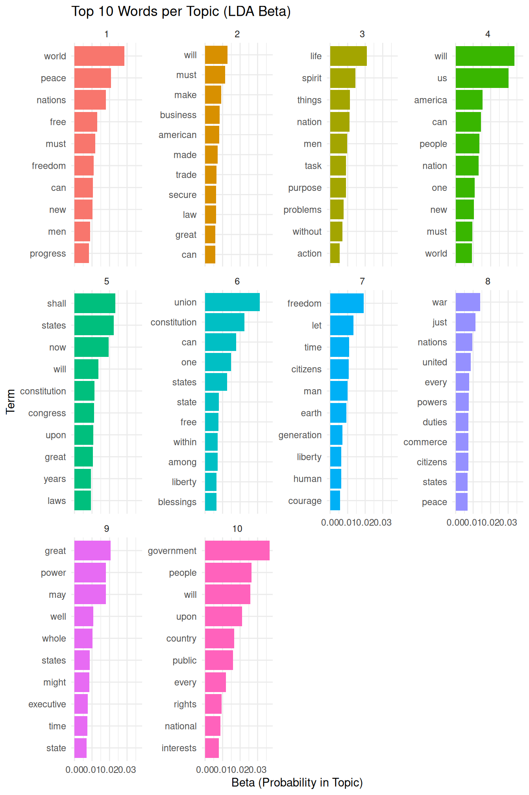
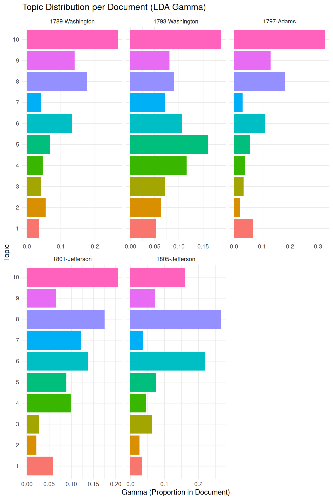

8.1 Latent Dirichlet Allocation (LDA)
Latent Dirichlet Allocation (LDA) is a generative probabilistic model for collections of discrete data, such as text corpora. The core idea is that each document contains various topics, and a word distribution characterises each topic. The model assumes that the process of writing a document includes:
- Choosing the length of the document.
- Choosing a mixture of topics for the document.
- For each word in the document:
- Choosing a topic from the mixture of topics in the document.
- Choosing a word from the word distribution of the selected topic.
LDA aims to infer these latent topic mixtures for each document and word distributions for each topic, given the observed word frequencies in the corpus.
We will primarily use the topicmodels package to run LDA in R.
This package works with a specific document-term matrix format, so we first need to convert our quanteda dfm into this format using the convert() function.
We will use the inaugural speeches corpus (data_inaugural_dfm) from previous chapters as our example data.
We begin by loading the necessary libraries.
topicmodels is the core package for LDA.
quanteda is needed for corpus and DFM manipulation.
dplyr, tidytext, and ggplot2 are essential for subsequent data manipulation and visualisation of the model outputs in a tidy format.
# Install topicmodels if you haven't already: install.packages('topicmodels')
library(topicmodels)
library(quanteda) # Ensure quanteda is loaded
library(dplyr) # For data manipulation later
library(tidytext) # For tidying model output later
library(ggplot2) # For visualization later
data(data_corpus_inaugural)
data_inaugural_tokens <- tokens(data_corpus_inaugural, remove_punct = TRUE, remove_symbols = TRUE,
remove_numbers = TRUE, remove_url = TRUE, remove_separators = TRUE, split_hyphens = FALSE)
data_inaugural_tokens <- tokens_tolower(data_inaugural_tokens)
data_inaugural_tokens <- tokens_select(data_inaugural_tokens, stopwords("english"),
selection = "remove")
data_inaugural_dfm <- dfm(data_inaugural_tokens)
data_inaugural_dfm <- dfm_compress(data_inaugural_dfm, margin = "features")
inaugural_dtm <- convert(data_inaugural_dfm, to = "topicmodels")Once the libraries have been loaded and the data has been prepared in the required format, we will specify the parameters for the LDA model using Gibbs sampling. These parameters control the inference process, including the number of iterations, burn-in period, thinning interval, random seeds for reproducibility, and independent chains to run.
When using Gibbs sampling, specific parameters need to be set: burnin (the number of initial iterations to discard), iter (the total number of iterations after the burn-in period), thin (the thinning interval), seed (the random seed or seeds for multiple runs), nstart (the number of independent chains) and best (whether to keep the model with the highest log-likelihood if nstart > 1). Additionally, we must set the desired number of topics to extract. This is a common challenge in topic modelling, as no definitive method exists. It often involves a combination of statistical measures, such as likelihood or coherence scores, and qualitative evaluation of the topics to determine their meaning and interpretability.
Using Gibbs sampling, we can fit an LDA model with a chosen number of topics. For example, k could be set to 10. The explanation of the parameters and the choice of k has been expanded slightly for clarity.
# Set parameters for Gibbs sampling
burnin <- 2000 # Number of initial iterations to discard.
iter <- 1000 # Number of iterations to keep after burnin.
thin <- 200 # Keep every 200th iteration.
seed <- list(42, 5, 24, 158, 2500) # Seeds for multiple runs.
nstart <- 5 # Number of independent chains to run.
best <- TRUE # Keep the best model from the multiple runs.
k_lda <- 10 # Number of topics to find. With the parameters defined, we fit the LDA model to the document-term matrix.
The LDA() function from the topicmodels package performs this fitting process using the specified method and control parameters.
# Fit the LDA model using Gibbs sampling
inaugural_lda10 <- LDA(inaugural_dtm, k = k_lda, method = "Gibbs", control = list(burnin = burnin,
iter = iter, thin = thin, seed = seed, nstart = nstart, best = best))
# Display the top words for each topic
print("Top terms per topic:")## [1] "Top terms per topic:"terms(inaugural_lda10, 10) # Show top 10 terms for each of the 10 topics. These terms are the words with the highest probability within each topic.## Topic 1 Topic 2 Topic 3 Topic 4 Topic 5 Topic 6
## [1,] "world" "will" "life" "will" "shall" "union"
## [2,] "peace" "must" "spirit" "us" "states" "constitution"
## [3,] "nations" "make" "things" "america" "now" "can"
## [4,] "free" "business" "nation" "can" "will" "one"
## [5,] "must" "american" "men" "people" "constitution" "states"
## [6,] "freedom" "made" "task" "nation" "congress" "state"
## [7,] "can" "trade" "purpose" "one" "upon" "free"
## [8,] "new" "secure" "problems" "new" "great" "among"
## [9,] "men" "law" "without" "must" "years" "within"
## [10,] "progress" "can" "action" "world" "laws" "blessings"
## Topic 7 Topic 8 Topic 9 Topic 10
## [1,] "freedom" "war" "great" "government"
## [2,] "let" "just" "may" "people"
## [3,] "time" "nations" "power" "will"
## [4,] "citizens" "united" "well" "upon"
## [5,] "man" "every" "whole" "country"
## [6,] "earth" "powers" "states" "public"
## [7,] "generation" "duties" "might" "every"
## [8,] "human" "commerce" "executive" "rights"
## [9,] "liberty" "citizens" "time" "national"
## [10,] "courage" "states" "state" "interests"The terms() function allows us to inspect the words with the highest probability of belonging to each topic.
These top words provide initial clues for interpreting the meaning of each discovered topic.
By examining the words associated with each topic, we can begin to understand the themes present in the corpus.
To further explore the topic-word distributions, known as \(\beta\), and prepare them for visualization, we use the tidy() function from the tidytext package.
tidytext facilitates working with text data and model outputs in a “tidy” format, which is compatible with dplyr and ggplot2 for efficient data manipulation and visualization.
library(tidytext) # Ensure tidytext is loaded
library(dplyr) # Ensure dplyr is loaded
library(ggplot2) # Ensure ggplot2 is loaded
# Tidy the LDA model output to get the topic-word probabilities (beta) The
# 'beta' matrix represents the probability of a word belonging to a topic.
inaugural_lda10_topics <- tidy(inaugural_lda10, matrix = "beta")
# Display the structure of the tidied beta output
print(inaugural_lda10_topics)## # A tibble: 92,090 × 3
## topic term beta
## <int> <chr> <dbl>
## 1 1 fellow-citizens 0.0000142
## 2 2 fellow-citizens 0.000167
## 3 3 fellow-citizens 0.0000233
## 4 4 fellow-citizens 0.00000746
## 5 5 fellow-citizens 0.00124
## 6 6 fellow-citizens 0.0000164
## 7 7 fellow-citizens 0.0000181
## 8 8 fellow-citizens 0.0000150
## 9 9 fellow-citizens 0.00426
## 10 10 fellow-citizens 0.00000728
## # ℹ 92,080 more rowsThe resulting inaugural_lda10_topics data frame contains columns for the topic, the term (word), and beta (the probability of that word occurring in that topic).
To visualize the top words for each topic, we filter this data frame to retain only the top N words per topic based on their beta values, typically the top 10, before creating a bar chart.
We select the top terms for each topic based on their beta values, grouping the data by topic and then using slice_max to select the top 10 terms within each group.
Finally, we arrange the results for better readability.
# Select the top 10 terms for each topic based on beta values
inaugural_lda10_topterms <- inaugural_lda10_topics %>%
group_by(topic) %>% # Group the data by topic
slice_max(beta, n = 10) %>%
ungroup() %>%
arrange(topic, -beta) Using the filtered data, we create a faceted bar chart to visualize the top terms for each topic and their corresponding beta probabilities. Reordering the terms within each facet based on their beta values makes the plot easier to interpret. The explanation of the plot has been slightly expanded.
inaugural_lda10_topterms %>%
mutate(term = reorder_within(term, beta, topic)) %>%
ggplot(aes(beta, term, fill = factor(topic))) + # Plot beta on the x-axis, term on the y-axis.
geom_col(show.legend = FALSE) + # Add bars, hide legend
facet_wrap(~ topic, scales = "free_y") + # Create a separate plot (facet) for each topic.
scale_y_reordered() +
labs(title = "Top 10 Words per Topic (LDA Beta)",
x = "Beta (Probability in Topic)",
y = "Term") +
theme_minimal() # Use a minimal theme for a clean appearance.
This plot provides a visual overview of the keywords that define each topic. By examining these words, we can assign a meaningful label or interpretation to each discovered topic. This step is crucial for understanding the thematic structure of the corpus.
Another important output of LDA is the document-topic distribution, known as \(\gamma\), which represents the proportion of each topic present in each document. This information allows us to identify which topics are most prominent in specific documents. We again use the tidy() function to extract this data in a convenient format.
# Tidy the LDA model output to get the document-topic probabilities (gamma) The
# 'gamma' matrix represents the proportion of each topic in each document.
inaugural_lda10_documents <- tidy(inaugural_lda10, matrix = "gamma")
# Display the structure of the tidied gamma output
print(inaugural_lda10_documents)## # A tibble: 600 × 3
## document topic gamma
## <chr> <int> <dbl>
## 1 1789-Washington 1 0.0351
## 2 1793-Washington 1 0.0536
## 3 1797-Adams 1 0.0686
## 4 1801-Jefferson 1 0.0594
## 5 1805-Jefferson 1 0.0335
## 6 1809-Madison 1 0.0326
## 7 1813-Madison 1 0.0417
## 8 1817-Monroe 1 0.0159
## 9 1821-Monroe 1 0.0130
## 10 1825-Adams 1 0.0490
## # ℹ 590 more rowsThe inaugural_lda10_documents data frame contains columns for the document, the topic, and gamma (the proportion of that topic in that document).
We can visualize the topic distribution across documents, for example, by looking at the top topics in a selection of documents or by visualizing the distribution of a specific topic across all documents.
Here, we will visualize the topic distribution for a few selected documents to illustrate how topics are mixed within documents.
We select a subset of documents to visualize their topic distributions. This allows us to examine the topic proportions in individual documents and see how different topics contribute to the content of each document.
# Select a few documents to visualise (e.g., the first few)
selected_docs <- unique(inaugural_lda10_documents$document)[1:5] # Select the names of the first 5 unique documents.
# Filter the gamma data for selected documents and arrange
inaugural_lda10_selected_docs <- inaugural_lda10_documents %>%
filter(document %in% selected_docs) %>% # Keep only the rows where the document name is in our selected_docs list.
arrange(document, -gamma) # Arrange the data first by document name, then by gamma in descending order to easily see the most prominent topics per document.
# Show the structure of the selected documents' gamma data
print(inaugural_lda10_selected_docs)## # A tibble: 50 × 3
## document topic gamma
## <chr> <int> <dbl>
## 1 1789-Washington 10 0.267
## 2 1789-Washington 8 0.176
## 3 1789-Washington 9 0.140
## 4 1789-Washington 6 0.132
## 5 1789-Washington 5 0.0674
## 6 1789-Washington 2 0.0548
## 7 1789-Washington 4 0.0463
## 8 1789-Washington 3 0.0407
## 9 1789-Washington 7 0.0407
## 10 1789-Washington 1 0.0351
## # ℹ 40 more rowsWith the data filtered for the selected documents, we can create a faceted bar plot. This plot shows the proportion of each topic within each of the selected documents, providing a visual representation of the document-topic mixtures.
inaugural_lda10_selected_docs %>%
mutate(topic = factor(topic)) %>%
ggplot(aes(gamma, topic, fill = topic)) + geom_col(show.legend = FALSE) + facet_wrap(~document,
scales = "free_x") + labs(title = "Topic Distribution per Document (LDA Gamma)",
x = "Gamma (Proportion in Document)", y = "Topic") + theme_minimal()
It might be a good idea at this point to refer back to the “Validate, Validate,”Validate” by Grimmer & Stewart (2013), which we mentioned earlier. This is especially relevant here, as unsupervised methods literally “find” patterns, with the risk that — given we tend to be very good at recognizing patterns – we find non-sense patterns. Thus, we must ensure that the patterns or topics we find are meaningful and useful. The validation needed for this often involves a combination of quantitative metrics and qualitative interpretation.
On the quantitative side, we can use topic coherence, which assesses the semantic similarity between the high-scoring words in a topic. Topics with high coherence tend to be more human-interpretable. While the topicmodels package doesn’t directly provide a built-in topic coherence measure, it can be computed using other packages like ldatuning or manual calculation based on word co-occurrence statistics in the corpus (we will return to this when discussing STM, where the package makes this significantly easier).
Another quantitative approach involves examining perplexity, a measure of how well the model predicts a held-out set of documents.
Lower perplexity generally indicates a better model fit. As the topicmodels package provides the log-likelihood of the model, we can derive the perplexity from it.
# Get the log-likelihood of the fitted model
log_likelihood <- logLik(inaugural_lda10)
N <- sum(inaugural_dtm) # Calculate the total words in the document-term matrix.
perplexity <- exp(-log_likelihood/N) # Calculate perplexity using the formula.
print(paste("Perplexity of the LDA model:", perplexity))## [1] "Perplexity of the LDA model: 1262.87536366491"Most importantly, beyond quantitative metrics, qualitative evaluation is essential. For LDA, this involves carefully inspecting the top terms for each topic (as shown in the beta visualization) and assessing whether they form a coherent theme. We also examine the document-topic distributions (gamma visualization) to see if documents with high proportions of a given topic are indeed about the interpreted theme. Comparing topic assignments to known characteristics of documents or human judgments (if available) can also provide valuable validation. Experimenting with different numbers of topics (\(k\)) and comparing the resulting topics qualitatively and quantitatively is a standard practice in LDA model validation.
Finally, the choice of the number of topics (\(k\)) is the most problematic aspect of validation as, while quantitative measures like coherence or perplexity can guide this choice, ultimately, the interpretability and utility of the topics for the research question are paramount. To compare models with different numbers of topics, one would typically train multiple LDA models (each with a different \(k\)) and then compare their log-likelihood/perplexity or topic coherence scores, visualizing these scores against \(k\).